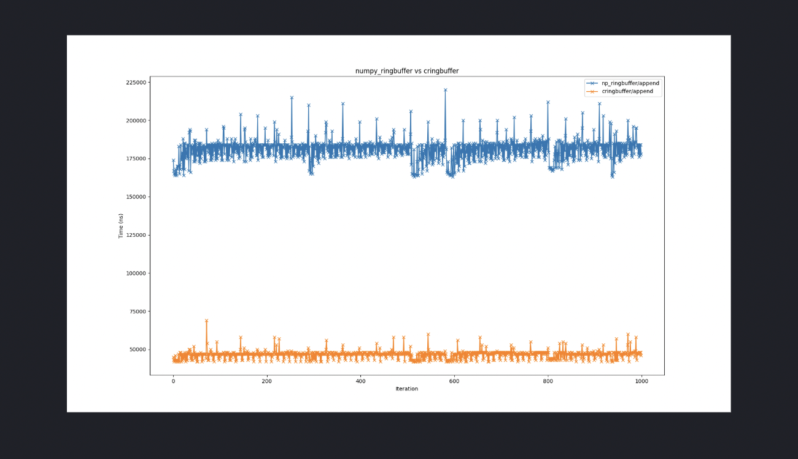

Scientific Programming
Cython
Implementation for a ringbuffer
A ringbuffer, also known as a circular buffer, is a data structure used in computing to efficiently manage a fixed-size, continuous stream of data. It comes with a predetermined capacity and typically uses two pointers—often called the "head" (left) and "tail" (right)—to mark the start and end of the buffer. When either pointer reaches the end of the buffer, it wraps around to the beginning. This allows data to be added or accessed from the head or tail in constant time, making it highly efficient for specific use cases. However, accessing data in the middle of the buffer is less efficient. Once the buffer reaches full capacity, adding new data overwrites the oldest data.
In the world of markets, continuous data streams are everywhere—think orderbook updates, market trades, and more. For handling contiguous numerical data in such scenarios, the numpy_ringbuffer library provides a handy implementation of the circular buffer. You can check out the reference implementation here:
Reference Ringbuffer Implementation
"""
MIT License
Copyright (c) 2016 Eric Wieser
Permission is hereby granted, free of charge, to any person obtaining a copy
of this software and associated documentation files (the "Software"), to deal
in the Software without restriction, including without limitation the rights
to use, copy, modify, merge, publish, distribute, sublicense, and/or sell
copies of the Software, and to permit persons to whom the Software is
furnished to do so, subject to the following conditions:
The above copyright notice and this permission notice shall be included in all
copies or substantial portions of the Software.
THE SOFTWARE IS PROVIDED "AS IS", WITHOUT WARRANTY OF ANY KIND, EXPRESS OR
IMPLIED, INCLUDING BUT NOT LIMITED TO THE WARRANTIES OF MERCHANTABILITY,
FITNESS FOR A PARTICULAR PURPOSE AND NONINFRINGEMENT. IN NO EVENT SHALL THE
AUTHORS OR COPYRIGHT HOLDERS BE LIABLE FOR ANY CLAIM, DAMAGES OR OTHER
LIABILITY, WHETHER IN AN ACTION OF CONTRACT, TORT OR OTHERWISE, ARISING FROM,
OUT OF OR IN CONNECTION WITH THE SOFTWARE OR THE USE OR OTHER DEALINGS IN THE
SOFTWARE.
"""
import numpy as np
from collections import Sequence
class RingBuffer(Sequence):
def __init__(self, capacity, dtype=float, allow_overwrite=True):
"""
Create a new ring buffer with the given capacity and element type
Parameters
----------
capacity: int
The maximum capacity of the ring buffer
dtype: data-type, optional
Desired type of buffer elements. Use a type like (float, 2) to
produce a buffer with shape (N, 2)
allow_overwrite: bool
If false, throw an IndexError when trying to append to an already
full buffer
"""
self._arr = np.empty(capacity, dtype)
self._left_index = 0
self._right_index = 0
self._capacity = capacity
self._allow_overwrite = allow_overwrite
def _unwrap(self):
""" Copy the data from this buffer into unwrapped form """
return np.concatenate((
self._arr[self._left_index:min(self._right_index, self._capacity)],
self._arr[:max(self._right_index - self._capacity, 0)]
))
def _fix_indices(self):
"""
Enforce our invariant that 0 <= self._left_index < self._capacity
"""
if self._left_index >= self._capacity:
self._left_index -= self._capacity
self._right_index -= self._capacity
elif self._left_index < 0:
self._left_index += self._capacity
self._right_index += self._capacity
@property
def is_full(self):
""" True if there is no more space in the buffer """
return len(self) == self._capacity
# numpy compatibility
def __array__(self):
return self._unwrap()
@property
def dtype(self):
return self._arr.dtype
@property
def shape(self):
return (len(self),) + self._arr.shape[1:]
# these mirror methods from deque
@property
def maxlen(self):
return self._capacity
def append(self, value):
if self.is_full:
if not self._allow_overwrite:
raise IndexError('append to a full RingBuffer with overwrite disabled')
elif not len(self):
return
else:
self._left_index += 1
self._arr[self._right_index % self._capacity] = value
self._right_index += 1
self._fix_indices()
def appendleft(self, value):
if self.is_full:
if not self._allow_overwrite:
raise IndexError('append to a full RingBuffer with overwrite disabled')
elif not len(self):
return
else:
self._right_index -= 1
self._left_index -= 1
self._fix_indices()
self._arr[self._left_index] = value
def pop(self):
if len(self) == 0:
raise IndexError("pop from an empty RingBuffer")
self._right_index -= 1
self._fix_indices()
res = self._arr[self._right_index % self._capacity]
return res
def popleft(self):
if len(self) == 0:
raise IndexError("pop from an empty RingBuffer")
res = self._arr[self._left_index]
self._left_index += 1
self._fix_indices()
return res
def extend(self, values):
pass
def extendleft(self, values):
pass
# implement Sequence methods
def __len__(self):
return self._right_index - self._left_index
def __getitem__(self, item):
# handle simple (b[1]) and basic (b[np.array([1, 2, 3])]) fancy indexing specially
if not isinstance(item, tuple):
item_arr = np.asarray(item)
if issubclass(item_arr.dtype.type, np.integer):
item_arr = (item_arr + self._left_index) % self._capacity
return self._arr[item_arr]
# for everything else, get it right at the expense of efficiency
return self._unwrap()[item]
def __iter__(self):
# alarmingly, this is comparable in speed to using itertools.chain
return iter(self._unwrap())
# Everything else
def __repr__(self):
return '<RingBuffer of {!r}>'.format(np.asarray(self))
Since our trading system receives up to hundreds of thousands of socket messages in the market data stream in short periods of time, we are interested in writing a C-level extension class that speeds up critical operations.
We will first offer our solution, and then explain our code in detail. First, we require declarations (if you are unfamiliar with Cython syntax, read the Cython tutorial from our market notes our quant blog):
#cringbuffer.pxd
import numpy as np
cimport numpy as cnp
cdef class RingBuffer:
cdef:
cnp.ndarray _arr
int _left_index
int _right_index
int _capacity
cdef cnp.ndarray _unwrap(self)
cdef void _wraparound(self)
cdef bint check_full(self)
cpdef void append(self, value)
cpdef void appendleft(self, value)
#cringbuffer.pyx
# cython: language_level=3, boundscheck=False, wraparound=False, cdivision=True
import numpy as np
cimport numpy as cnp
cimport cython
cdef class RingBuffer:
def __init__(self, int capacity, dtype=np.float64):
if capacity <= 0:
raise ValueError("RingBuffer capacity must be positive integral value.")
self._arr = np.zeros(capacity, dtype)
self._left_index = 0
self._right_index = 0
self._capacity = capacity
cdef cnp.ndarray _unwrap(self):
if self._right_index <= self._capacity:
return self._arr[self._left_index:self._right_index]
else:
return np.concatenate((
self._arr[self._left_index:],
self._arr[:self._right_index % self._capacity]
))
cdef void _wraparound(self):
if self._left_index >= self._capacity:
self._left_index -= self._capacity
self._right_index -= self._capacity
elif self._left_index < 0:
self._left_index += self._capacity
self._right_index += self._capacity
property is_full:
def __get__(self):
return self.check_full()
property dtype:
def __get__(self):
return self._arr.dtype
property shape:
def __get__(self):
return tuple([self._arr.shape[0]])
property maxlen:
def __get__(self):
return self._capacity
def __array__(self):
return self._unwrap()
cdef bint check_full(self):
return (self._right_index - self._left_index) == self._capacity
cpdef void append(self, value):
if self.check_full():
self._left_index += 1
self._arr[self._right_index % self._capacity] = value
self._right_index += 1
self._wraparound()
cpdef void appendleft(self, value):
if self.check_full():
self._right_index -= 1
self._left_index -= 1
self._wraparound()
self._arr[self._left_index] = value
def peek(self):
if len(self) == 0:
raise IndexError("peeked empty buffer")
return self._arr[(self._right_index - 1) % self._capacity]
def peekleft(self):
if len(self) == 0:
raise IndexError("peeked empty buffer")
return self._arr[self._left_index]
def pop(self):
if len(self) == 0:
raise IndexError("popped empty buffer")
self._right_index -= 1
res = self._arr[self._right_index % self._capacity]
return res
def popleft(self):
if len(self) == 0:
raise IndexError("popped empty buffer")
res = self._arr[self._left_index]
self._left_index += 1
self._wraparound()
return res
def __len__(self):
return self._right_index - self._left_index
def __getitem__(self, item):
indexer = np.asarray(item)
with cython.boundscheck(True), cython.wraparound(True), cython.cdivision(False):
if issubclass(indexer.dtype.type, np.integer):
indexer = (indexer + self._left_index) % self._capacity
return self._arr[indexer]
return self._unwrap()[item]
def __iter__(self):
return iter(self._unwrap())
def __repr__(self):
return 'RingBuffer({!r})'.format(np.asarray(self))
The explanation; (please read the reference numpy_ringbuffer implementation, as comparisons are drawn)
We know that NumPy arrays and array indexing are supported in Cython. By default, our ringbuffer data structure is implemented to allow overwrites, so the instance attribute allow_overwrite is excluded.
The functions _unwrap, append, and appendleft are declared as cdef or cpdef methods. The _fix_indices function is renamed to _wraparound in our implementation. Other methods are implemented with standard Python def semantics.
In the reference implementation, operations that add data (append and appendleft) include a conditional check where the branch self.is_full >> elif not len(self) evaluates to True when the buffer is full, yet empty. This handles the edge case when buffer capacity is vacuously zero. We can skip these checks if we validate buffer capacity to be positive integers. Otherwise, our initialization logic mirrors the reference.
The _unwrap method is only called within the extension class and interacts solely with C-types, so we can declare it as cdef. Plus, we’ve added a small optimization: if the data can be obtained contiguously, np.concatenate unnecessarily copies data from its first argument. Instead, we can just return the sliced view.
The cdef-ication of _fix_indices into _wraparound significantly boosts runtime by cutting function call overhead and optimizing internal arithmetic logic to avoid dynamic dispatch.
Extension type properties can be declared with standard Python syntax or, as in our example, using property is_full. We also tweaked the behavior of shape, though this isn’t a performance optimization, so we won’t dive into it here.
Since we guarantee overwrite behavior and ensure the buffer has non-zero capacity, the logic for a full buffer in append and appendleft simplifies considerably. Beyond that, the logic stays largely the same. In fact, most other functions follow the reference implementation closely. Member attributes are now statically typed C-level attributes, but aside from that, no major changes stand out. The most compelling part of the code though, requires a bit of reflection.
Let’s establish some invariants—properties of the ringbuffer that hold true before and after every operation throughout its life. They are:
- 0 <= left < capacity
- 0 <= left <= right
The first condition is straightforward to verify: wherever the left index is modified, _wraparound is called, keeping it in bounds. For the second, notice that in _wraparound, both left and right indices shift by a constant factor, preserving their relative order.
In append and appendleft, the right index increments at least as much as the left, and the left decrements at least as much as the right. In pop and popleft, the right index decrements or the left index increments only when len(self)—or equivalently, self._right_index - self._left_index —is at least one. Thus, our invariant holds steady.
The goal is to get Cython to generate efficient C code that skips index bounds and wraparound checks. To pull this off, we need to guarantee our array indexing stays within capacity and never goes negative. Thanks to our invariants, indexing with the left pointer is safe. For the right pointer, we’re good as long as we apply a modulo operation (right % capacity) to the indexer.
On top of that, the % operator follows C-level semantics when we set the compiler directive cdivision=True, otherwise it sticks to Python semantics. For correct behavior, the first operand must be positive. Based on our invariants, the only right-indexing we need to worry about is in peek and pop. Since we’ve already confirmed the buffer isn’t empty, the right index is at least one—so we’re in the clear.
The compiler directives
is indeed safe, and generates efficient indexing code.
There’s one spot where we don’t control the indexing. Imagine a ringbuffer instance, say cbuffer. A user can freely call cbuffer[:-5], which triggers the __getitem__ method with negative indexing behavior. Here, we need to tell the compiler to fall back on wraparound and safe indexing code to handle it properly.
On a side note, tweaking only the right indices doesn’t mess with the invariant property checked by _wraparound. That means we can ditch the index-fixing step in the pop operation from the reference implementation—nice little cleanup!
Once we’re done, we’ll roll out test cases to confirm our ringbuffer optimizations don’t introduce sneaky side effects and actually deliver the performance boost we’re after.
The benchmarking code can be viewed in quantpylib.benchmarks.ringbuffer of the quantpylib repository.
The operation we’ll lean on most is the append functionality. We’ll chart the time taken in nanoseconds for 1000 appends (y-axis) across 1000 trials (x-axis).
